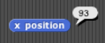
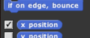
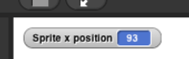

6. Sensor Blocks
At the bottom of Motion palette are three blocks shaped differently from the others. The oval-shaped and are called reporters. (We don't need the third one right now.) Unlike the jigsaw-puzzle-piece-shaped command blocks we've used until now, reporters don't carry out an action (such as moving the sprite or displaying a speech balloon) by themselves. Instead they report a value, usually for use in another block's input slot.
These particular reporters tell you where the sprite is on the stage. As in algebra class, x means left-to-right position, and y means bottom-to-top position.
If your sprite is in the middle of the stage, drag it somewhere off-center. Then, drag an x position block into the scripting area and click on it. You should see a little speech balloon next to the block:
Click on the gray box to the left of the x position block in the palette, and then look over to the stage. You will see that the value that the block would report is displayed on the stage:
 This on-stage display is called a watcher.
The and the will tell you the position of your sprite on the screen. Move the sprite around and the values reported by these blocks change.